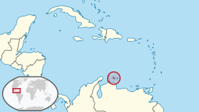

Ik ben Lynden Martina en ik ben momenteel vijftien jaar oud, met mijn verjaardag op de één-na-laatste dag van het jaar, 30 December.
Ik woon in de Rijpelberg, Helmond, samen met mijn ouders.
Ik heb ook nog een zus van momenteel twintig jaar oud, maar zij woont niet meer bij mij thuis en heeft een eigen apartementje.
Ik ben geboren in Nederland, maar ik ben niet van Nederlands bloed. Mijn ouders waren geboren op Curaçao.
Curaçao is een eiland dichtbij Zuid-Amerika en is deel van de Nederlandse antillen.
Locatie van Curaçao:

Ik heb geen huisdieren thuis, maar ik heb wel een parkiet gehad met de naam 'Pippò'.
Als hobby's heb ik mountain biken, videogames spelen en dingen 3D-printen.
Mijn interesses zijn; auto's, motors, tanks, vuurwapens, videogames en algemene technologie.
Ik vind het ook leuk om soms buiten te gaan om te lopen of fietsen met vrienden.
Mijn favoriete genres muziek zijn Hiphop en RnB.
Ik doe niet aan een sport, maar ik heb vroeger wel voetbal gedaan.
Ook vind ik basketbal wel leuk om te doen, maar niet echt als sport.
Ik doe tweetalig onderwijs op Havo niveau op het Jan van Brabant college.
Voordat ik op het Jan van Brabant college kwam, zat ik op de basisschool 'Talentrijk'.
De vakken die ik het leukst vond op mijn oude basisschool (Talentrijk) waren gymen en rekenen.
En de vakken die ik het leukst vind op het voortgezet onderwijs (het Jan van Brabant college) zijn LO, Informatica en product ontwerpen.
Wat ik later in de toekomst wil doen weet ik nog niet heel precies, maar Ik heb wel twee paden in mijn hoofd wat ik waarschijnlijk wil gaan doen later:
1. studeren bij defensie als onderofficier munitietechniek
2. Automotive studeren
Ik weet in ieder geval wel dat ik een technische opleiding wil volgen na het voortgezet onderwijs.
Volgens de 'Prestatie en Motivatie test' die ik heb gemaakt, ben ik in sterke mate extrinsiek gemotiveerd en redelijk intrinsiek gemotiveerd.
Met 'in sterke mate extrinsiek gemotiveerd', wordt er bedoelt dat ik het erg belangrijk vind wat ik met mijn studie kan bereiken in de toekomst.
En met 'in redelijke mate intrinsiek gemotiveerd' wil zeggen dat ik het best leuk vindt om te studeren, maar ook weer niet héél leuk.
Dus, volgens de test vind ik het resultaat van mijn studie belangrijker dan mijn studie zelf.
Ik herken het resultaat van die test wel goed en herken dat de test mijn motivatie over mijn opleiding op het voortgezet onderwijs wel goed kan samenvatten.
Deze Prestatie-en-motivatie test heb ik gemaakt op www.123test.nl.

Volgens een kernkwaliteiten test die ik heb gemaakt zijn mijn kernkwaliteiten: bedachtzaam, luisterend, opmerkzaam, eerlijk en sensitief (Gevoelig).
Deze resultaten van de kernkwaliteiten test kan ik heel goed herkenen in mezelf en ik vind dat het resultaat erg accuraat is.
Ook mijn moeder is er mee eens dat deze resulterende kernkwaliteiten bij mij passen.

Bij elk van mijn kernkwaliteiten zijn er ook valkuilen, allergiën en uitdagingen.
Bij mijn kernkwaliteit 'bedachtzaam' is er als,
• valkuil; aarzeling, want dan moet ik vaak aarzelen bij een keuze.
• allergie; impulsiviteit, want daarbij denk je niet na over wat je doet.
• uitdaging; besluitvaardigheid, want dan kan ik moeilijk een besluit snel maken.
Bij mijn kernkwaliteit 'luisterend' is er als,
• valkuil; onderbreken of conclusies trekken, want dan luister ik niet meer en onderbreek de persoon die praat.
• allergie; dominantie, bijvoorbeeld wanneer iemand harder dan iemand anders praat waar ik naar probeer te luisteren.
• uitdaging; lawaai en afleiding, want dan kan ik moeilijker naar iemand luisteren.
Bij mijn kernkwaliteit 'opmerkzaam' is er als,
• valkuil; over-opmerkzaamheid, want je kan dan wantrouwig of achterdochtig worden.
• allergie; inattent zijn, want je let dan niet op.
• uitdaging; balans tussen opmerkzaam en onopmerkzaam, want dat laat je opletten op momenten waar het nodig is.
Bij mijn kernkwaliteit 'eerlijkheid' is er als,
• valkuil; botheid, want eerlijkheid kan soms bot opgenomen door iemand.
• allergie; manipulatie, want dan kan mijn eerlijke mening veranderen zonder dat ik dat echt wil door iemand.
• uitdaging; tact zijn, eerlijk zijn op gepaste tijden.
Bij mijn kernkwaliteit 'sensitief (Gevoelig)' is er als,
• valkuil; overgevoeligheid, want dan wordt ik overvloedt door gevoelens.
• allergie; kilheid, iemand zonder gevoelens.
• uitdaging; nuchterheid, want ik kan dan dingen oordelen zonder de deelname van gevoelens.
Deze kernkwaliteiten test heb ik gemaakt op www.testcentrumgroei.nl.
Ik heb mijn valkuilen, allergiën en uitdagingen gevonden met behulp van patrickschriel.nl,
www.jobeducation.nl en www.desteven.nl.
Op studiekeuze.Qompas.nl heb ik een stappenplan over mijn studiekeuze gemaakt met verschillende testjes erin.
Een competentietest, een persoonlijkheidstest, een interessetest en een beroepstest.
Hier zijn de resultaten van de stappenplan die ik heb gemaakt, ook met de eerdergenoemde testjes: 'mijn Loopbaandossier'.